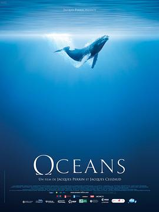

海洋 / Océans
又名：Oceans
国内上映的第一部纪录片吧？
作品信息
| 导演 | 雅克·贝汉 / 雅克·克鲁奥德 |
| 编剧 | 克里斯托夫·谢松 / 雅克·克鲁奥德 / 洛朗·德巴 / 斯特凡纳·迪朗 / 洛朗·戈德 / 雅克·贝汉 / 弗朗索瓦·萨兰诺 |
| 主演 | 皮尔斯·布鲁斯南 / 小佩德罗·阿门达里斯 / 雅克·贝汉 / 宫泽理惠 / 马蒂亚斯·勃兰特 / 阿尔多 / 兰斯洛特·佩林 / Manolo Garcia |
| 类型 | 纪录片 |
| 制片国家/地区 | 法国 / 瑞士 / 西班牙 / 美国 / 阿联酋 / 摩纳哥 |
| 语言 | 法语 |
| 上映日期 | 2011-08-12(中国大陆) / 2009-10-17(东京电影节) / 2010-01-27(法国) |
| 片长 | 104分钟(法国) / 84分钟(美国) / 100分钟(德国) / 86分钟(阿根廷) |
| IMDb | tt0765128 |
| 官方小站 | 雅克·贝汉《海洋》 |
最后一次看到是 2026-08-01T11:06:51+10:00 · 豆瓣原页